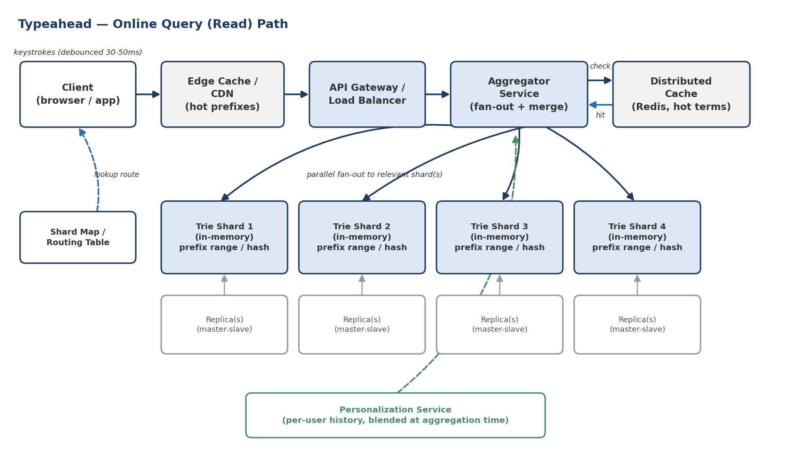

Designing a Typeahead / Autocomplete Suggestion System
A real-time, prefix-based query-suggestion service (Google / Facebook / LinkedIn search-box style): requirements, capacity estimation, trie internals, ranking, the offline build pipeline, sharding, caching, and follow-up interview questions.
Problem Statement
Design a typeahead (autocomplete / search-suggestion) system: as a user types a query into a search box, the service returns the top-K completions in real time so the user can finish their query faster and more accurately, similar to Google Search, Facebook's search bar, LinkedIn's People/Company search, or Amazon's product search box.
This is a classic "design a system that must answer in milliseconds against a huge, constantly-changing prefix space" problem. It tests comfort with in-memory data structures (tries), offline/online data pipelines, sharding, caching, and the read/write split that shows up in almost every large-scale system design interview.
Clarifying Questions to Ask the Interviewer
Always open with clarifying questions — they show product sense and narrow the scope before you commit to an architecture.
- Scope: are we suggesting search queries only, or also entities (people, products, places) with structured metadata?
- Scale: roughly how many searches per day, and how many unique terms should be indexed (Google-scale vs. a mid-size product)?
- Latency bar: what end-to-end suggestion latency is acceptable (e.g., 100–200 ms)?
- Personalization: should results depend on the individual user (history, location, language) or is a global ranking acceptable for v1?
- Freshness: how quickly must a newly-trending term or a newly-created entity (e.g., a new LinkedIn profile) become suggestible — seconds, minutes, or hours?
- Moderation: do we need to support fast removal of terms for legal, hate-speech, or PII reasons?
- Typo tolerance: should the system correct misspellings, or only match exact prefixes?
- Platforms: web only, or also low-bandwidth mobile clients where payload size and round-trips matter more?
Requirements and Goals
Functional Requirements
- As the user types each character, return the top 10 suggestions that start with the typed prefix.
- Suggestions should be ranked primarily by historical popularity (search frequency), with room to blend in freshness, location/language, and personalization.
- Support insertion of new terms and updating of frequencies as new searches occur.
- Support removal of a term (legal takedown, hate speech, spam, PII).
Non-Functional Requirements
- Low latency: suggestions must render within ~200 ms of a keystroke, ideally under 100 ms for the network+compute portion.
- High availability over strong consistency: it is fine to show a suggestion list that is a few minutes/hours stale; it is not fine for the search box to hang or error.
- High read throughput: reads (keystrokes) outnumber writes (new searches becoming "known" terms) by orders of magnitude — this is an extremely read-heavy system.
- Scalability: index must grow to hundreds of millions of unique terms without linear latency growth.
- Fault tolerance: a single server or shard failure must not take down the suggestion feature.
Out of Scope
State this explicitly in the interview:
- Full-text search / ranking of actual search results pages (that's a separate search-relevance system).
- Voice-to-text or natural-language query understanding.
- Ads / sponsored suggestions injection (can be mentioned as a future extension).
Back-of-the-Envelope Capacity Estimation
Doing this out loud is as important as the final numbers — it shows the interviewer how you reason, and it directly drives later decisions (single box vs. sharded, cache size, etc.).
Traffic
| Metric | Assumption | Result |
|---|---|---|
| Total searches / day | Google-like scale | 5,000,000,000 (5B) |
| Average QPS | 5B / 86,400s | ~58,000 QPS (~60K) |
| Peak QPS (2–3× avg) | diurnal traffic pattern | ~120,000–175,000 QPS |
| Keystrokes per search | avg query ~15–20 chars, suggestion fires per keystroke after debounce | ~4–8 suggestion calls per completed search (client-side debouncing cuts this down) |
| Unique terms to index | ~20% of raw queries are unique; index top ~50% of those | ~100,000,000 (100M) unique terms |
Storage
| Metric | Assumption | Result |
|---|---|---|
| Avg query length | 3 words × 5 chars | 15 characters |
| Bytes per character | UTF-16 / Unicode-safe storage | 2 bytes |
| Bytes per term (raw) | 15 × 2 | 30 bytes |
| Base index size | 100M terms × 30 bytes | ≈ 3 GB (raw strings) |
| Trie overhead | pointers/metadata per node ~3–8× raw string size (uncompressed) | ≈ 10–25 GB in a naive pointer-based trie |
| With daily growth | +2% new terms/day, retaining 1 year, naive linear model | 3 GB + (0.02 × 3 GB × 365) ≈ 25 GB (strings only) |
| Compressed (double-array trie / FST) | 3–10× reduction vs. naive trie (industry reports, e.g. Uber's place-autocomplete trie) | ≈ 2–5 GB total, fits comfortably in RAM per shard |
Bandwidth
Each suggestion response returns 10 short strings (~15 chars) plus small metadata — well under 1 KB. At 120K peak QPS that is roughly 120 MB/s of egress, trivially handled by normal web-tier bandwidth, especially once CDN/edge caching absorbs the highly-skewed "popular prefix" traffic (a small fraction of prefixes drive the majority of volume — a classic Zipfian distribution).
API Design
| Endpoint | Method | Key Parameters | Response |
|---|---|---|---|
/v1/suggestions | GET | q (prefix string), limit (default 10), lang, geo, sessionToken | Ranked list of {term, score, type} plus a requestId for client-side stale-response cancellation |
/v1/suggestions:log | POST (fire-and-forget / beacon) | query, selectedSuggestion, position, sessionToken | 202 Accepted — feeds the offline ranking pipeline |
/v1/terms/{term} | DELETE (internal, admin-only) | term, reason | 202 Accepted — queues removal in the moderation filter and next batch build |
A sessionToken lets the aggregator distinguish keystrokes belonging to the same typing session (useful for prefetching and for cancelling now-irrelevant in-flight requests server-side, mirroring the client-side abort logic).
High-Level Architecture
The system splits cleanly into two paths that should almost never block each other: a latency-critical online read path that only ever reads an in-memory structure, and an offline write/build pipeline that ingests logs and periodically republishes a new version of that structure. This read/write separation is the single most important idea in the whole design.

Components
| Component | Responsibility |
|---|---|
| Client | Debounces keystrokes, cancels stale requests, maintains a local recent-suggestions cache, opens an early connection to the API. |
| Edge Cache / CDN | Caches responses for the most common short prefixes ("a", "th", "how"…) close to the user. |
| API Gateway / Load Balancer | TLS termination, auth, rate limiting; routes to the aggregator tier; is prefix-hash-aware if using consistent hashing to a fixed aggregator pool. |
| Aggregator Service | Given a prefix, determines which shard(s) own it, fans the request out in parallel, merges partial top-10 lists into one, blends in personalization, and returns the final list. |
| Trie Shard (in-memory) | Holds a partition of the compressed trie plus, at every node, a pre-computed top-K list of completions and their scores. |
| Distributed Cache (Redis/Memcached) | Absorbs read traffic for hot prefixes so most requests never need to touch a trie shard at all. |
| Personalization Service | Thin per-user layer (recent history, saved entities) merged in at aggregation time — never a full per-user trie. |
| Offline Pipeline | Consumes query logs, computes/decays frequencies, filters banned terms, rebuilds trie snapshots, and hot-swaps them onto the live shards. |
Deep Dive — The Core Data Structure: A Trie
We need to store a huge set of strings such that, given any prefix, we can retrieve matching strings quickly. A trie ("try") is the natural fit: each node represents one character, and a root-to-node path spells out a prefix. Given prefix "cap", we walk the trie to the node for "p" and everything in that subtree starts with "cap".
![Diagram of a compressed trie built from the terms cat, cap, capital, captain, and caption. The root connects to a shared 'CA' node, which branches into a 'T' edge (terminal: CAT) and a 'P' edge (terminal: CAP, which is itself also a valid prefix). The P node further branches into a 'TION' edge (terminal: caption) and an 'ITAL' edge (terminal: capital). Two callout boxes show cached top-K lists: the root caches a top-3 list (caption 520, captain 410, cat 300), and the CAP node caches a top-2 list (caption 520, captain 410). A footnote states each node stores only references to terminal nodes plus frequency, not full strings, to save memory.](../images/system-design-classics/typeahead-fig2-compressed-trie.png)
Why a Naive Trie Isn't Enough
Two problems show up immediately. First, a raw character-per-node trie wastes memory on long chains that have no branching ("caption" contributes 7 single-child nodes). The fix is a compressed / radix trie, where a chain with no branching is merged into a single edge labeled with a multi-character string — this is exactly what the trie's persistence encoding (see Persistence and Recovery below) exploits.
Second, and more important for latency: naively finding the "top 10" for a prefix means traversing the entire subtree under that node and sorting the results. For a prefix like "system design interview questions" the subtree can be dozens of levels deep and enormous — far too slow for a 200 ms budget at 60K+ QPS.
Precompute: Cache Top-K at Every Node
The standard fix is to precompute and cache the top-10 (or top-5) completions at every single node in the trie, along with their scores. A query then becomes O(prefix length) — walk to the node, return the cached list, done. This is the single biggest lever for meeting the latency SLA, and it is the reason the whole system is architected around an offline build step: computing these top-K lists is expensive, so we do it in batch, not per-request.
Building this bottom-up is naturally recursive: a leaf's top-K is just itself; each internal node merges the top-K lists of all its children (a K-way merge) to produce its own top-K. This recursive merge is exactly what the offline "Trie Builder" step in Figure 3 does.
Memory Optimization
- Store references (pointers/IDs to terminal nodes), not full duplicate strings, in each node's top-K list — reconstruct the string by walking parent pointers only when a node is actually returned.
- Use a compressed / succinct representation instead of a naive pointer-heavy trie: a Double-Array Trie (DAT) or a Finite State Transducer (FST, as used by Lucene/Elasticsearch's Completion Suggester) encodes transitions in flat integer arrays, giving O(1) transitions with far better CPU-cache locality. Real deployments report 3–10× memory reduction versus a naive trie — e.g. large place-autocomplete indexes fit in well under a gigabyte compressed versus several gigabytes uncompressed.
- Case-fold and normalize input (lowercase, strip accents) so the same node serves "NYC", "nyc", and "Nyc" — simpler and denser than a case-sensitive trie.
Alternative Data Structures
Mention these, then justify the trie:
| Structure | Idea | Trade-off vs. Trie+TopK |
|---|---|---|
| Prefix hash table | Hash every prefix of every string directly to its completions list — O(1) lookup. | No shared structure between prefixes, so memory explodes (every prefix of every string is a separate key); harder to update incrementally. |
| FST / Double-Array Trie | Same prefix semantics as a trie, but a compact array-based encoding. | Much better memory density and cache locality; slightly more complex/slower to mutate in place, which fits well since we rebuild in batch anyway. (Used by Elasticsearch's Completion Suggester.) |
| Sorted array + binary search | Keep all terms sorted; binary search for the prefix range. | Simple and compact, but re-sorting on update is expensive and finding "top-K by score within a prefix range" needs an extra pass — no free top-K caching. |
| Redis sorted sets (ZSET) per prefix-key | Store each prefix as a ZSET key whose members are completions scored by frequency; ZINCRBY for O(log n) frequency updates. | Very simple to operate and update online (used in practice, e.g. the open-source "Prefixy" project), but the number of keys is huge (one per prefix) and cross-shard aggregation for long-tail prefixes is costlier than an in-memory trie walk. |
Ranking Algorithm
The simplest ranking signal is raw historical search frequency: the count of how many times a search terminated at that node. That alone gets you a working v1. A production system blends several signals:
| Signal | Why it matters | Example |
|---|---|---|
| Historical frequency | Baseline popularity of the exact completion. | "weather" is searched far more than "weathervane". |
| Freshness / recency (EMA-weighted) | A term trending this week should outrank a term that was popular a year ago and has since faded. | "olympics 2028" should rise as the event approaches. |
| Location / language | Same prefix, very different expected completion by geography or locale. | "foot" → "football" (UK/soccer) vs. "foot" → "football" (US/American football). |
| Personalization / history | A user's own past searches and saved entities are strong predictors of intent. | A user who always searches their own team's stats gets that suggestion boosted. |
| Entity quality / trust signals | For entity search (people, businesses), verified or complete profiles should be favored over spam/incomplete ones. | LinkedIn boosting profiles with photos/complete data in "Network Typeahead". |
| Business / product rules | Explicit boosts or suppressions independent of pure popularity. | Suppressing a term under legal review even if its frequency is high. |
Weights are tuned via offline evaluation and online A/B testing (see Metrics, Experimentation, and Evaluation below). Google's public documentation similarly describes overall popularity as the dominant signal, blended with trending topics, locale, and (when signed in) personal search history.
Building and Updating the Trie (Write Path)
At ~60K QPS, updating the live trie synchronously on every single query would be prohibitively expensive and would risk blocking reads. The standard approach — and the second core idea of this design — is to decouple writes from reads entirely: log queries cheaply online, and rebuild/refresh the ranked structure offline on a schedule.
![Diagram of the typeahead offline build and update pipeline: sampled search query logs flow into Kafka, then into a stream/batch aggregation stage (Flink, Spark, or MapReduce) that emits an hourly-windowed update into a frequency store holding EMA-decayed counts. From the frequency store, one path goes to a content filter that strips banned/legal/hate/PII terms, and another path feeds a Trie Builder that recomputes top-K bottom-up. The Trie Builder produces a new trie snapshot, which is written to snapshot storage (S3/HDFS) and also hot-swapped onto the live trie shards, either via a copy-and-swap or by promoting an updated replica to master.](../images/system-design-classics/typeahead-fig3-write-pipeline.png)
Logging and Sampling
Every search (or, to control log volume, a fixed sample such as every query, or every Nth query when a term needs at least N searches before it's worth suggesting) is logged asynchronously — never on the request's critical path.
Aggregation: Then vs. Now
| Approach | How it works | When to use |
|---|---|---|
| Batch MapReduce (classic answer) | Hourly MR job scans the log store, computes frequency counts per term for the window, and outputs a delta. | Simple to reason about; fine when "fresh within an hour" is an acceptable SLA (this is the original textbook answer). |
| Streaming (modern answer, e.g. Kafka + Flink/Spark Structured Streaming) | Query events are published to Kafka topics; a streaming job maintains rolling/windowed counts continuously and emits incremental updates. | Preferred in current real systems — lower latency to "trending now" signals, smoother load than one big hourly batch spike, and the same infrastructure can feed both this pipeline and general analytics. |
Frequency Decay: Exponential Moving Average (EMA)
Rather than storing all-time counts (which would let old spikes dominate forever) or naively re-summing a trailing N-day window from scratch, apply an EMA. This gives more weight to recent activity, requires only the previous score plus the new delta (O(1) update per term instead of rescanning history), and naturally lets stale terms fade out of the top-K over time.
Rebuilding and Propagating Updates
- Bottom-up recomputation: each affected leaf gets its new frequency; every ancestor up to the root recomputes its top-K by merging children — cheap because only the path from a changed leaf to the root needs revisiting, not the whole tree.
- Incremental top-K maintenance: after a term's frequency changes, walk from its terminal node up to the root; at each ancestor, check whether the term now qualifies for that node's top-K (insert it, evict the current lowest-scoring entry) or whether it no longer qualifies.
- Hot-swap options: (a) build a full new trie snapshot on a separate machine/process and atomically swap the pointer once ready ("blue-green" swap), discarding the old copy; or (b) master-slave — apply updates to the slave replica while the master keeps serving, then promote the slave to master (near-zero read disruption, matching the replication approach described in Replication below).
Removing Terms (Legal / Abuse / PII)
Two layers, so takedowns aren't gated on the batch schedule: (1) a fast-path filter list checked by every trie shard before returning results (near-immediate removal from user-facing output), and (2) permanent removal from the trie itself at the next scheduled rebuild. This mirrors how the content-filter stage sits right in the offline pipeline in Figure 3.
Persistence and Recovery
The live trie is an in-memory structure for speed, but a server restart or crash must not mean rebuilding from raw logs from scratch. Periodically snapshot the trie to durable storage (e.g., blob storage / HDFS) level-by-level: for each node, store its character(s) and its number of children, immediately followed by the serialized children (a simple pre-order/level-order encoding). For example, a trie holding {car, cart, cop, cod} might serialize as a compact token stream like "C2,A2,R1,T,P,O1,D" — enough to deterministically reconstruct the structure.
Top-K lists and frequencies are deliberately not part of this raw structural snapshot (parent references aren't known until children exist, so they can't be written top-down); instead, they are recomputed bottom-up immediately after structural reconstruction, exactly as during a normal offline build. On restart or failover, a shard loads its latest structural snapshot, replays the top-K build pass, and only then rejoins the serving pool.
Data Partitioning / Sharding
Even though the whole compressed index can fit on a single beefy machine (see Storage above), we still shard it to parallelize load, isolate faults, and scale horizontally as the term count grows. Three classic strategies, in order of increasing robustness:
| Strategy | How it works | Pros | Cons |
|---|---|---|---|
| A. Static range by first letter(s) | All terms starting with "A" on shard 1, "B" on shard 2, etc.; rarer letters can be combined. | Simple and predictable; a query with a known prefix maps deterministically to one shard. | Real-world term distribution is not uniform — some letters (e.g. "S", "C") are far more common, causing badly unbalanced shards. |
| B. Dynamic range by server capacity | Fill shard 1 until it's full (e.g. "A"-"AABC"), then start shard 2 at the next term, and so on; keep a small lookup table of shard boundaries. | Balances memory usage across shards regardless of alphabet skew. | Popular prefixes still create hot spots (e.g. everything under "cap" lands on one shard and gets disproportionate query volume); boundaries must be recalculated as data grows. |
| C. Hash of the term | Hash each full term to a shard number; distribution is effectively random. | Best load balancing, eliminates hotspots almost entirely. | A single-character prefix could match terms on every shard, so every query must fan out to all shards and aggregate — higher fan-out cost per request, which is why an aggregator tier (Figure 1) is essential with this scheme. |
In practice, most production systems use scheme B or C plus an aggregator layer that fans a query out to the relevant shard(s), merges their partial top-K lists into one final top-K, and returns it to the client — visible as the "Aggregator Service" box in Figure 1. A shard-routing table (often just a consistent-hash ring or a small boundary map cached at the gateway) tells the aggregator which shards to query for a given prefix.
Caching Strategy
Query popularity is heavily skewed (Zipfian): a small number of prefixes account for a large share of traffic. Layering caches in front of the trie shards captures most of that traffic before it ever needs a trie walk:
- Browser / client-side cache: store recent results locally; a backspace or a re-typed character is often already known.
- CDN / edge cache: cache full responses for the most common short prefixes ("a", "th", "wh"…), which are shared across virtually all users and change slowly.
- Distributed cache (Redis/Memcached) in front of the trie tier: application/aggregator servers check this before hitting a trie shard; a cache hit avoids a network hop to the shard tier entirely.
- Predictive pre-caching with a lightweight ML model: predict which terms are about to trend (e.g., breaking news, seasonal spikes) and warm the cache proactively rather than reactively.
Replication, Load Balancing, and Fault Tolerance
Replication
Every trie shard is replicated (master-slave or master-master with read replicas) both for read scaling — replicas absorb query load in parallel — and for fault tolerance. Updates from the offline pipeline are applied to a replica first; once verified, that replica is promoted, giving a near-zero-downtime rolling update path (see Rebuilding and Propagating Updates above).
Load Balancing
A load balancer / API gateway sits in front of the shard-aware aggregator tier, and the aggregator itself holds (or queries) the shard routing table so it can fan a request out to exactly the shards that can contain matches for a given prefix, then merge results.
What Happens When a Shard Goes Down?
- Traffic for that shard's key range fails over to its replica(s) — this should be automatic via health checks in the load balancer / aggregator.
- A restarted node rebuilds from the latest durable snapshot (see Persistence and Recovery above) rather than replaying raw logs from scratch.
- While a shard is degraded, the aggregator can choose to return a partial result (missing that shard's contribution) rather than fail the whole request outright — availability over completeness, consistent with the non-functional requirements.
Client-Side Design
A large share of perceived latency and unnecessary backend load is solved on the client, not the server:
- Debounce: only fire a request after the user pauses typing for ~30–50 ms, rather than on every keystroke.
- Cancel in-flight requests: if the user keeps typing, abort the previous request (e.g., AbortController) so stale responses can't race ahead of newer ones and flicker on screen.
- Minimum prefix length: wait for 2–3 characters before querying — very short prefixes are low-signal and expensive (touch many shards).
- Prefetching: speculatively request completions for likely next characters based on the current top suggestion.
- Local history cache: recently used / recently selected suggestions are highly likely to be reused and can be served with zero network round-trip.
- Early connection warm-up: open the HTTP/TLS connection to the suggestion service as soon as the search UI loads, so the first keystroke doesn't pay connection-setup latency.
- CDN-pushed popular terms: ship a small "most popular globally" list to the client/edge/ISP proactively so the very first keystrokes are already covered.
Advanced Topics
Typo Tolerance / Fuzzy Matching
A pure trie only matches exact prefixes, so a misspelling like "gogle" won't surface "google". Two practical approaches, both trading memory/compute for typo resilience:
- Bounded edit-distance during the trie walk: while traversing, allow up to 1–2 character edits (insertion, deletion, substitution) and explore the small number of resulting branches — a classic Levenshtein-automaton-over-trie technique.
- Symmetric Delete algorithm (SymSpell-style): precompute and index all strings within edit distance 1 (or 2) of every known term at index-build time, so a typo maps directly to the intended term via a straightforward dictionary lookup at query time — much faster online at the cost of extra index size, and it fits naturally into the batch-rebuild pipeline already in place.
- BK-trees / n-gram indexes as an alternative structure purpose-built for approximate string matching, often used as a secondary path when the primary trie walk returns nothing.
Personalization at Scale
The temptation is to build a per-user trie, but that does not scale — hundreds of millions of users would each need their own structure. The scalable pattern is to keep one shared global trie and add a thin per-user re-ranking layer on top: fetch the global top-K, fetch a small personal-history/affinity list for that user, and blend/re-rank at the aggregator (Figure 1's "Personalization Service"). This keeps the expensive shared structure cacheable while still producing individualized results.
Multi-Language and Unicode Considerations
Clarify locale scope early (see Clarifying Questions to Ask the Interviewer above). Latin-script languages fit the trie model directly; CJK languages and IME (input method editor) composition, as well as right-to-left scripts (Arabic, Hebrew), need special handling — e.g., suggestions may need to key off of pinyin/romanized input for Chinese, or the trie may need per-language shards/tries entirely, since sharing one global structure across scripts adds complexity for little benefit.
Content Moderation
Beyond the fast-path filter list mentioned in Removing Terms (Legal / Abuse / PII) above, mature systems maintain an explicit deny-list pipeline with human review for legal takedowns, hate speech, and PII (e.g., accidentally-searched social security numbers should never be suggested back to other users), and a mechanism for emergency/immediate suppression outside the normal batch cadence.
Metrics, Experimentation, and Evaluation
- Suggestion CTR (click-through rate) and "suggestion accepted" rate — did the user pick a suggestion instead of typing the full query?
- Query abandonment rate — users who start typing but never search, a signal that suggestions aren't helpful.
- P50/P95/P99 latency per keystroke, tracked separately for cache hits vs. shard fan-out.
- Online A/B testing of ranking-weight changes (see Ranking Algorithm above) before full rollout, since ranking signals can't be perfectly validated offline.
Real-World Case Studies
Grounding the design in how real systems solved these exact problems is a strong way to close out an interview answer.
| System | Notable design choice |
|---|---|
| Google Search | Ranks primarily by aggregate search popularity, blended with trending signals, locale/language, and — for signed-in users with activity history enabled — personal search history; serves predictions in well under 100 ms via heavy pre-computation and edge caching. |
| Facebook Search Typeahead | One of the earliest publicized production typeahead systems (2010); distinguishes "generic" typeahead (same ranking for everyone) from results that must be filtered/ranked per-user social graph. |
| LinkedIn (Cleo, open-sourced) | Multi-layer architecture (browser cache → web tier → result aggregator → typeahead backends) built around inverted indexes, bloom filters, and a scorer; explicitly separates "Generic Typeahead" (global ranking, e.g. skills) from "Network Typeahead" (results filtered/ranked by the searching member's own connections), and updates in near-real-time so a brand-new member or company becomes searchable almost immediately. |
| Elasticsearch Completion Suggester | Uses a Finite State Transducer (FST) — conceptually similar to a trie but far more memory-dense — stored in memory per index segment; matches strictly left-to-right from the first character, and each suggestion entry carries an explicit weight used for ranking. |
| Redis-based approaches (e.g., the open-source "Prefixy" project) | Uses Redis sorted sets (ZSET) keyed by prefix, with ZINCRBY for O(log n) online frequency updates — an easy-to-operate alternative to a custom trie service for small-to-mid-scale deployments, at the cost of one key per prefix rather than a shared tree structure. |
| Uber-style place/address autocomplete | Reported using a Double-Array Trie for city/address prefixes, compressing a multi-gigabyte naive structure down to well under a gigabyte while achieving single-digit-millisecond P95 latency. |
Key Design Trade-offs Summary
| Decision Point | Options | Recommendation & Why |
|---|---|---|
| Ranking freshness vs. cost | Update live on every query vs. periodic offline rebuild | Offline batch/stream rebuild — synchronous updates at 60K+ QPS would overwhelm the system and risk blocking reads; a few minutes of staleness is an acceptable trade for stability. |
| Consistency vs. availability | Strongly consistent global ranking vs. eventually consistent per-shard views | Eventual consistency (AP over CP) — a suggestion list that's a little stale or slightly different across replicas is far preferable to a slow or unavailable search box. |
| Partitioning scheme | Static range vs. capacity-based range vs. hash | Hash-based (or capacity-based with an aggregator) — avoids the hotspots that static alphabetical partitioning guarantees, at the cost of requiring fan-out + merge. |
| Personalization depth | Per-user trie vs. shared trie + thin re-rank layer | Shared trie + re-rank layer — per-user tries don't scale to hundreds of millions of users and destroy cache hit rates. |
| Memory layout | Naive pointer trie vs. compressed structure (DAT/FST) | Compressed structure once index size justifies it — 3–10× memory savings and better cache locality with acceptable added build complexity, since it's rebuilt offline anyway. |
Bottlenecks, Failure Scenarios, and Mitigations
| Scenario | Impact | Mitigation |
|---|---|---|
| A single very popular prefix (e.g. a breaking-news term) spikes in traffic | Hotspot on whichever shard/cache entry owns it | Edge/CDN caching absorbs most of the spike before it reaches the shard tier; hash-based partitioning avoids a single shard owning an entire popular sub-tree. |
| Offline rebuild job falls behind or fails | Suggestions grow stale; new/trending terms don't surface | Alert on pipeline lag SLOs; keep serving the last-known-good snapshot (fail static, not fail closed); streaming pipeline reduces blast radius vs. one big batch job. |
| A trie shard crashes | Its prefix range becomes unavailable | Automatic failover to a replica; aggregator returns partial results from healthy shards rather than erroring the whole request. |
| Thundering herd on cache invalidation after a rebuild | Sudden surge of shard-tier traffic right after a hot-swap | Stagger/rolling cache warm-up; keep serving the old snapshot until the new one is fully warmed. |
| A harmful term needs removal urgently | Legal/reputational exposure if it lingers | Fast-path filter list checked on every response, independent of the batch rebuild cadence (see Removing Terms above). |
Common Interview Questions
A strong close is to anticipate the questions an interviewer will probe with. Grouped by theme, with a concise model answer for each.
Scaling & Performance
Data Structure & Storage
Consistency, Freshness & Reliability
Product & Edge Cases
One-Page Summary
Suggested ~40–45 Minute Delivery Order
- Clarify requirements & scale (5 min) — covers Requirements and Goals and Back-of-the-Envelope Capacity Estimation.
- Propose the trie + top-K-per-node core idea and why a naive subtree scan fails (8 min) — covers the Core Data Structure deep dive.
- Draw the high-level read path and write path diagrams (10 min) — covers High-Level Architecture and Building and Updating the Trie (Write Path).
- Go deep on 1–2 areas the interviewer steers you toward — typically partitioning/sharding and the update pipeline (10 min) — covers the Write Path and Data Partitioning / Sharding sections.
- Cover caching, replication, and client-side tricks briefly (5 min) — covers Caching Strategy, Replication/Load Balancing/Fault Tolerance, and Client-Side Design.
- Leave room for follow-ups; reference personalization, typo tolerance, or moderation only if asked or if time remains (see Advanced Topics).
Key Takeaways
References
- Grokking the System Design Interview — "Designing Typeahead Suggestion" (educative.io) — primary reference material provided for this design.
- LinkedIn Engineering — "Cleo: the open source technology behind LinkedIn's typeahead search" (engineering.linkedin.com).
- Elastic — Completion Suggester documentation (FST-based autocomplete in Elasticsearch).
- Google Search Help — "Manage Google autocomplete predictions" (support.google.com) — ranking signal disclosures.
- Community write-ups on Double-Array Trie memory compression and production use (e.g., place/address autocomplete at scale).
- Community write-ups on Redis sorted-set-based typeahead implementations (e.g., the open-source "Prefixy" project).